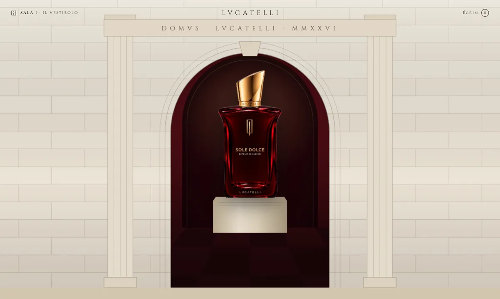
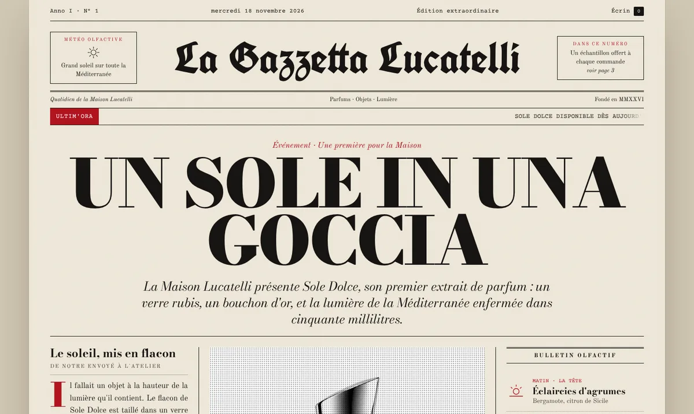
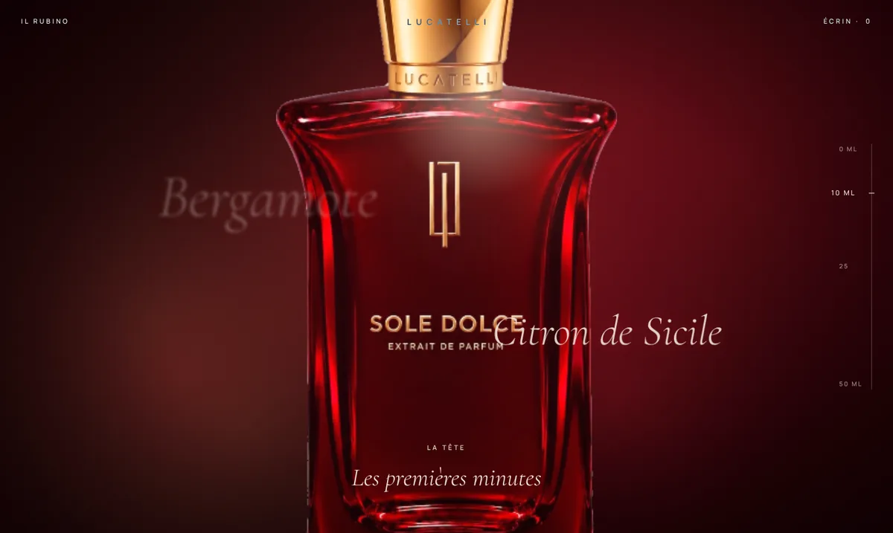
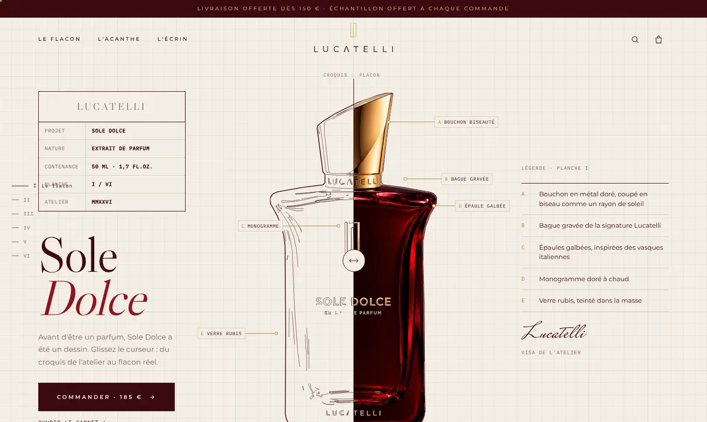

Chaque direction est une maquette navigable, sur ordinateur comme sur mobile. Même parfum, mêmes photos : seule l'expérience change. Choisissez celle qui ressemble le plus à la Maison, nous la développerons sur Shopify.

On franchit la porte en arc du palais Lucatelli et on visite les salles une à une : le vestibule, la galerie, la salle de l'acanthe, le salon de l'écrin.

Le site devient un grand quotidien italien : une à la une, bulletin olfactif façon météo, petites annonces pour les services et coupon de commande à découper.

On plonge dans le verre rouge du flacon. Plus on descend, plus on avance dans le parfum : la tête, puis le cœur, puis le fond.

Direction précédente : L'Atelier du verrier, du croquis au flacon.